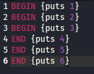
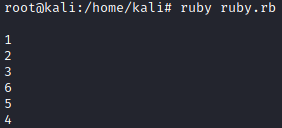

BEGIN/END
BEGIN and END are two reserved word in Ruby:
• BEGIN execute code at the beginning of the beginning of the program
◇ if there are more than one BEGIN block, they are executed following the order in which the Ruby interpreter encounters them.
• END execute code at the beginning of the end of the program
◇ if there are more than one END block, they are executed in the reverse order in which they are encountered.
